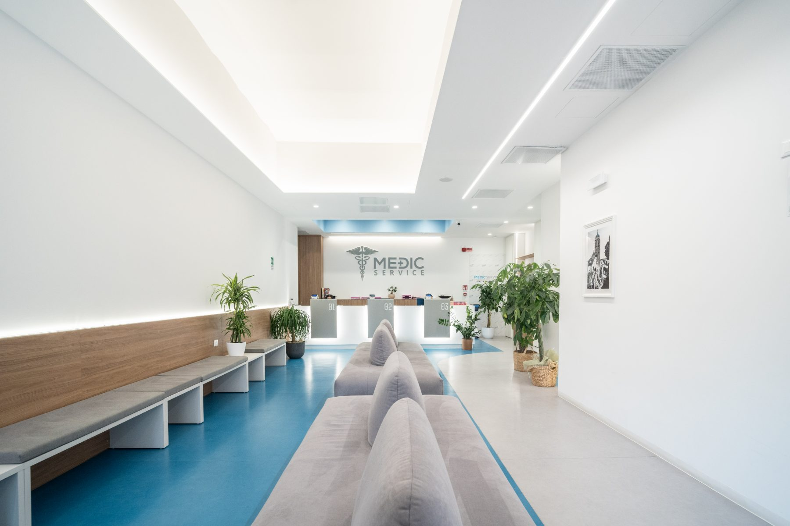
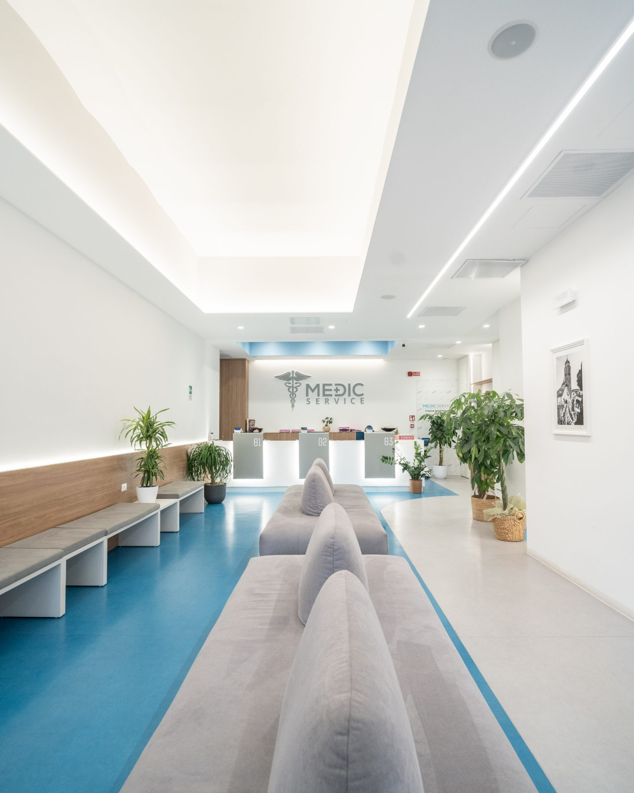
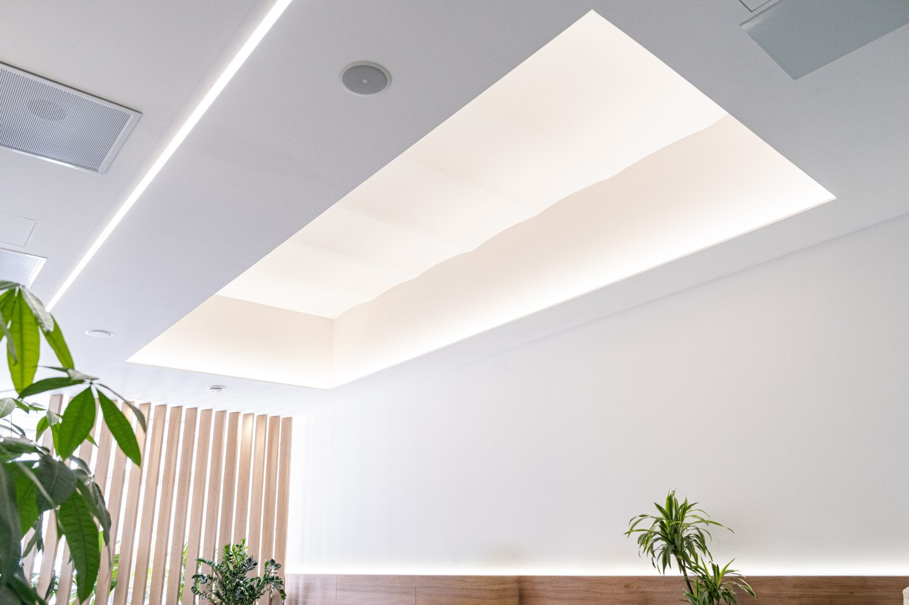
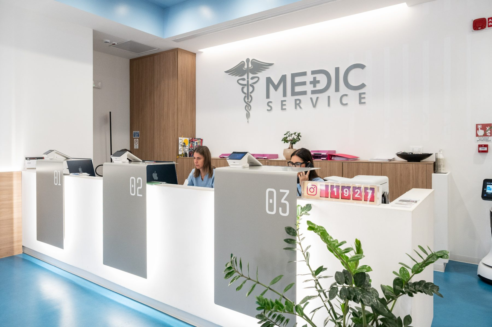
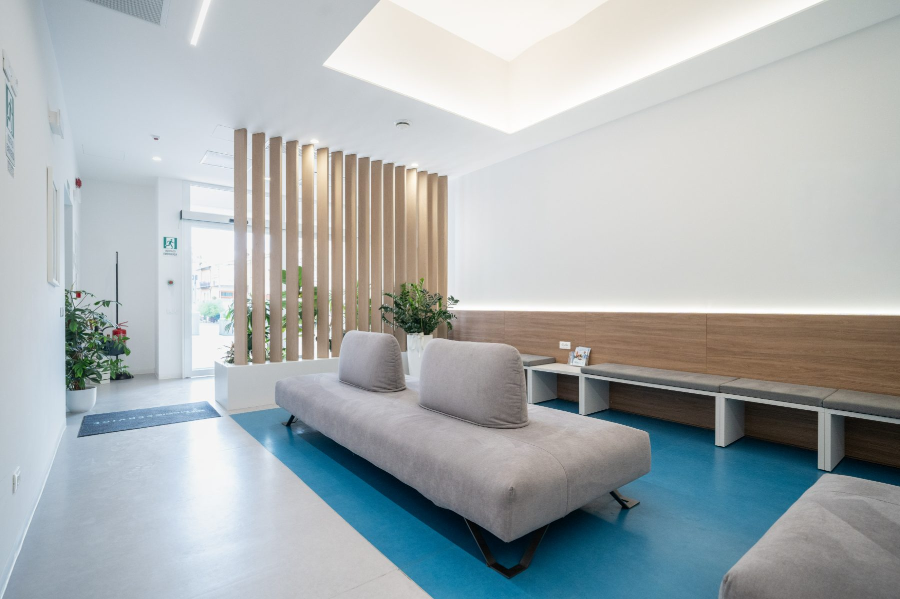
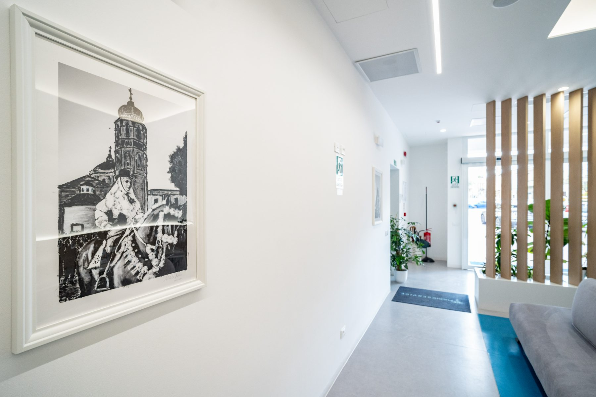

"Accoglienza impeccabile e tempi di attesa cortissimi. Ho prenotato online la sera prima e il giorno dopo ero dal cardiologo."
GM
Giorgio M.
2 settimane fa
2 settimane fa

Visite specialistiche, diagnostica per immagini, chirurgia e medicina estetica. Tutto in Piazza Tharros — e prenoti online in meno di un minuto.
Quattro aree chiare, una per ogni domanda. Nessun menu da decifrare: scegli l'ambito e prenoti con lo specialista giusto.
Cardiologia, allergologia, urologia, endocrinologia e molte altre. Lo specialista di fiducia, vicino a te.
Scopri l'area 02Radiologia, ecografia, MOC-DEXA, TAC dentale e ORL, senologia. Referti rapidi, macchinari di ultima generazione.
Scopri l'area 03Interventi ambulatoriali in giornata, in sala chirurgica dedicata. Entri ed esci lo stesso giorno, in sicurezza.
Scopri l'area 0416 trattamenti per viso, corpo e anti-aging, sempre eseguiti da un medico. Risultati naturali, percorso sicuro.
Scopri l'area





Prenoti online in meno di un minuto, oppure ci chiami. Come preferisci.
Scegli l'area. Ti mostriamo subito i medici disponibili.
— seleziona con chi vuoi prenotare.
Prossima disponibilità con . Giovedì 11 giugno 2026.
Riceverai conferma via SMS ed email. A presto in Piazza Tharros.